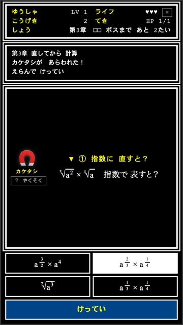
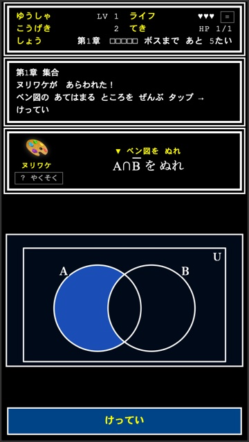
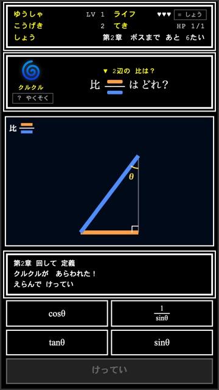
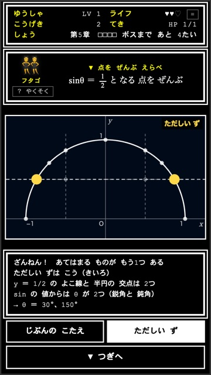

math-terakoya
判断だけで解く
数学クエスト
計算は しない。「どれか」を みきわめて、モンスターを たおす。
高校数学の いろいろな 単元を、スマホ・タブレット・パソコンの ブラウザで あそべます。
無料登録なしインストールなし生徒の 個人情報を あつかいません
▼ ゲーム（12本）
科目を えらんで ください。
図形と方程式

三角関数


指数関数・対数関数

場合の数と確率


図形の性質
図形と計量


▼ 授業での 使い方
- 生徒の 端末で、QR か アドレスを 開くだけです。インストールも 登録も いりません。
- ゲームの 「QR」を 押すと、教室の 画面に 映せる 大きさの QR が 出ます。
- 上の 「数学Ⅰ・数学Ⅱ・数学A」で 科目を 切りかえます。各ゲームの 説明と 章は 「くわしく」で 開きます。
- 章は どこからでも えらべます。授業で あつかった ところから 始められます。
- まちがえると、まちがえ方に あわせた 説明が 出ます。
- あそんだ 記録は、その 端末の ブラウザの 中に のこります。（ほかの 端末には 引きつがれません。ブラウザの 記録を 消すと、はじめからに なります。）
▼ 学校で 使うときに
- 生徒の 名前・成績などを 集めたり、外に 送ったり しません。ゲームは、外への 通信を すべて 止める 設定に してあります。
- 広告・課金・ログインは ありません。
- ゲームは ファイル1つで 動きます。一度 開けば、あそんで いる とちゅうで 通信は しません。
▼ 使ってよい 範囲（ライセンス）
CC BY-NC-SA 4.0（表示・非営利・継承）です。
- 授業・家庭学習で、自由に 使えます。画面を 映したり、写真を プリントに 使ったりも 自由です。
- 販売や、有料の 教材・サービスに 組みこむ ことは できません。
- 作りかえて 配るときは、同じ 条件（CC BY-NC-SA）で、作者「math-terakoya」を 表示して ください。
© 2026 math-terakoya CC BY-NC-SA 4.0